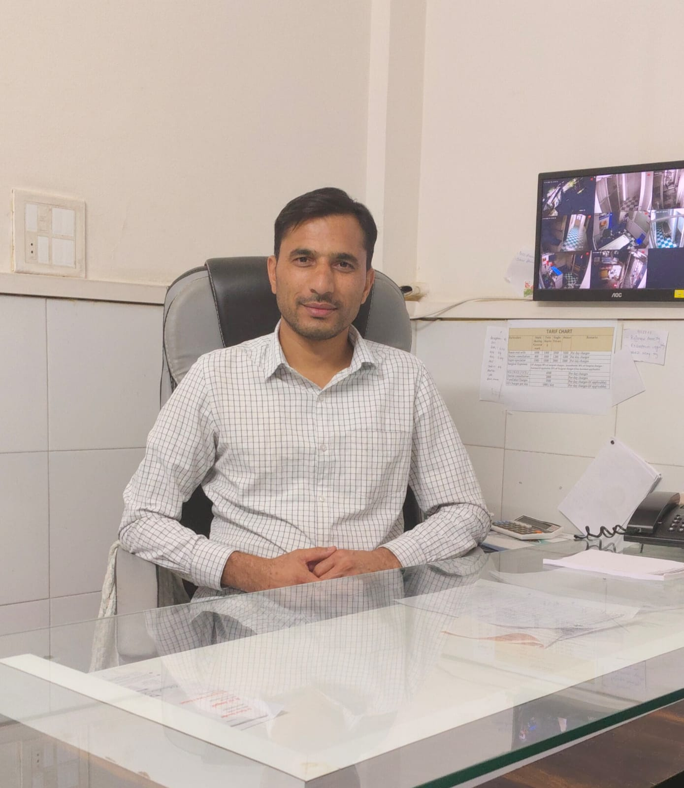

Founder of Arogyam Yog-Naturopathy Clinic with many years experience in Ayurveda and holistic healing. Our Naturopathy Center works to improve health in a natural way. Emphasis is placed on diet, yoga, Panchamabhauta treatment and lifestyle changes rather than medicines. Our mission is to heal patients naturally without chemicals and improve lifestyle through traditional therapies.
To educate people about natural treatments.
To reduce dependence on medicines.
To create a healthy lifestyle.
2nd Floor, Bhagchand Complex, Near Dindori Naka Circle
Nashik, Maharashtra